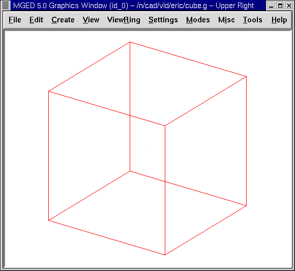
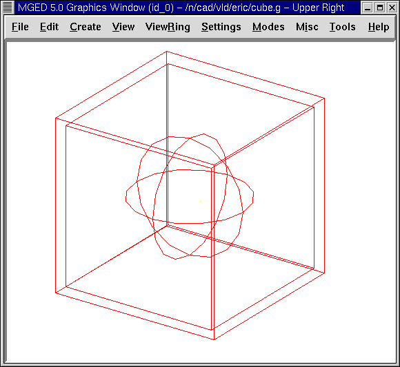
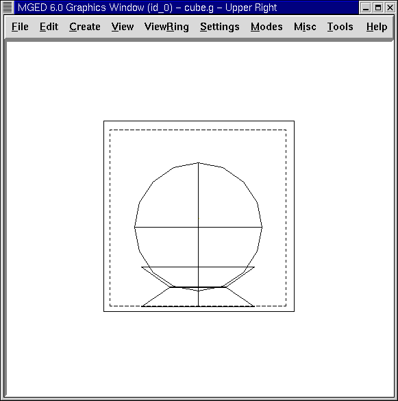

In this lesson you will:
-
Use the GUI to create a display box using arb8 shapes.
-
Create a globe inside the display box.
-
Assign material properties to make the objects appear more realistic.
-
Rotate an object 180’0 using the rotate option of the Edit menu
-
Use the color option of the Combination Editor to produce customized colors.
Create a New Database
Begin by creating a new database. Name your new file cube.g.
Creating the Display Box
Go to the Create menu, select the Arbs category, and then select an arb8 (arbitrary convex polyhedron with eight vertices). When asked to provide a name for the arb8, name it cube1.s. Click on Apply. Go to the Edit menu and select Accept. You now have a cube for the outside of the display box, as in the following:

Repeat the first part of this process to produce another arb8, this time calling this shape cube2.s. Go to the Edit menu and select Scale. Place the mouse pointer in the lower half of the Graphics Window screen and click the middle mouse button until the second cube is slightly smaller than the first cube, as follows:

Go to the View menu and change view to Front. Go to the Edit menu and select Translate (move). Hold down the SHIFT key and drag the inside cube into position in the center of the outside cube. Repeat this process from the Top view and Left view until the smaller cube is placed in the center of the outside cube when viewed from all perspectives. When you are finished, go back to the Edit menu and select Accept.
Create a Globe Inside the Display Box
Go to the Create menu and select sph from the list of Ellipsoids. Name the shape globe1.s and select Apply.
A sphere should appear inside the cube in the Graphics Window. Change View to Front.
Go to the Edit menu and select Scale. Reduce the size of the sphere until it will fit inside of the cube and then drag it into the center of the cube. Go to Edit and Accept your changes. Your globe and box should appear similar to the following in the az35, el25 view:

To view contents of the database, type at the Command Window prompt: ls[Enter]
You should see cube1.s, cube2.s, and globe1.s listed as shapes you have created. To make regions of these shapes, type at the prompt: r cube1.r u cube1.s - cube2.s[Enter] r globe1.r u globe1.s[Enter]
Using the Combination Editor to Assign Material Properties that Make the Objects Appear More Realistic
Go to Edit and select Combination Editor. In the dialog box, click the button next to the Name entry box. Select globe1.r from Select From All or Select From All Regions. Double click on the globe1.r name. Assign this region a Shader of cloud. Check the Boolean Expression box to make sure the region is made up of u globe1.s. Click on Apply to accept your choices. Go to View and select az35, el25.
Go back to Name and select cube1.r from the Select From All menu. Assign this region a Shader of glass. The glass shader is a shortcut to individually changing the attributes of the plastic shader to make it appear like glass.
Go to the Color option and enter the values 244 255 255. This will give your glass box a light cyan color. Click on Apply to accept your changes.
Before you can raytrace your design, you need to clear the Graphics Window by typing Z at the Command Window prompt because both shapes and regions are being displayed at this point. Next, type in the Command Window: draw cube1.r globe1.r[Enter]
The display box and globe should reappear in the Graphics Window. Go to the File menu and select Raytrace. Next, select the white option for Background Color. Click on Raytrace.
Your design should show a light cyan-colored glass cube with a blue globe inside. To eliminate the wireframing, go to Framebuffer (in the Raytrace Panel) and select Overlay. The display should appear similar to the following illustration:

To make this design more interesting, you can place the globe on a base. Do this by going back to Framebuffer and clicking on Active to deactivate the framebuffer. Next, go to the Create menu and select the trc (truncated right cone) under the Cones and Cylinders category. Name the shape base1.s. Working from a Front view, go to the Edit menu and select Scale. Click the middle mouse button to reduce the trc in size until the bottom of it appears to be an appropriate size for the globe base. (You may need to increase the size of your Graphics Window or decrease your geometry view size to see the bottom of the trc.) Next, reduce the height of the shape by selecting Set H from the Edit menu and clicking with the middle mouse button. You may need to switch back and forth between these two options a few times to get an acceptable size. When finished, however, do not select Accept yet, as we have more changes to make.
Moving and Rotating an Object
As with other features in MGED, moving and rotating objects can be accomplished in several ways, according to the amount of precision desired. As previously described, the Shift Grip functions can be used as a quick way to change an object when its exact angle and location do not necessarily matter. Alternatively, to achieve greater precision, the Translate (move) and Rotate commands under Edit can be selected and specific parameter numbers can be entered in the Command Window. In this lesson, we will experiment with both methods.
With your trc still in edit mode and still in a Front view, use the SHIFT key and the left mouse button to drag your shape (the bottom of the base) and sit it on the floor of the cube (just touching the inside box). Note that you could have selected Translate under Edit and entered parameters on the Command Line to move the trc to an exact location; however, in this case, aligning the shape with the drag-and-drop "eyeballing" method was appropriate. At this point, you may notice that your trc needs to be resized a little to better fit the globe. Use Scale and Set H as needed and then Accept your changes.
Now we need to make a second trc named base2.s, which we will use for the top of the base. On the Command Line, type: cp base1.s base2.s
The second trc will appear directly on top of the first trc, so we will have to use Primitive Selection under the edit menu to put base2.s in edit mode so that we can flip it upside down and then drag it to the top of the first trc.
To do this, we could use the CTRL and ALT (constrained rotation) keys and left mouse button and then move the mouse up or down until the trc is upside down. (If this method is used, note that you can release the mouse button and regrab the object if you need to.) However, because we know we want to rotate the shape an exact amount (180’0) about the x axis, let’s use a more precise method to flip the shape. Select Rotate under Edit and then type in the following parameters (abbreviated as p) on the Command Line: p 180 0 0[Enter]
Our shape should have flipped upside down and jumped to the bottom of the first trc. (The two zeros you input indicate no rotation along the y and z axes.) Now use the SHIFT key and the left mouse button to drag base2.s upward and sit it on top of base1.s. The two shapes should form a base in which to hold your globe. Check your alignment using multiple views and then Accept your changes.
Go to Edit and Primitive Selection and select globe1.r/globe1.s. As you did with the trc shapes, use the Shift Grips to drag the globe down until it is in place on the base. Go back to the Edit menu and select Accept. Your design should look as follows:

To make a region of the base, type in the Command Window: r base1.r u base1.s u base2.s[Enter]
Use the Color Tool of the Combination Editor to Produce Customized Colors.
In the Combination Editor window, click the button to the right of the Name entry box and then Select From All. Choose base1.r. Assign the base a Shader of plastic. In the Color box, enter the numbers: 217 217 217
Apply your changes. Before you can raytrace your completed design, you must first clear the Graphics Window and rebuild your design by typing at the Command Window prompt: Z[Enter] draw cube1.r globe1.r base1.r[Enter]
Change your view to az35, el25 and then raytrace your design, which should appear similar to the following:

Review
In this lesson, you:
-
Used the GUI to create a display box using arb8 shapes.
-
Created a globe inside the display box.
-
Used the Combination Editor to assign material properties that make the objects appear more realistic.
-
Rotated an object 180’0 using the rotate option of the Edit menu.
-
Used the color option of the Combination Editor to produce customized colors.